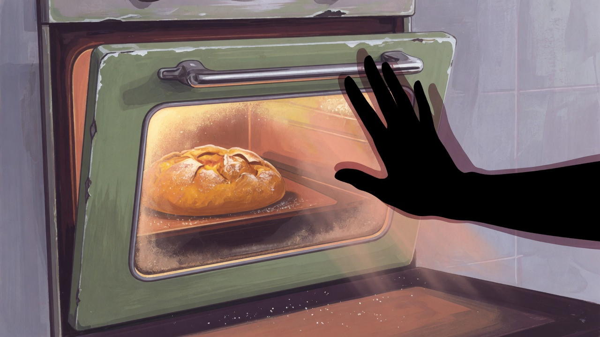

기능사 품목 접근 노트
굽기 중 문을 자주 열던 버릇 — 색 확인이 온도를 깎았다
단과자 굽기 중 색을 보겠다고 문을 자주 열었습니다. 온도가 떨어지고 색이 더 들쭉날쭉했습니다. 확인 시점을 한두 번으로 줄인 기록입니다.
완성 그램 레시피가 아닙니다. 식빵·단과자 등 실기 품목별로 집에서 무너지는 지점과 변수 순서만 정리합니다. 최신 시험 품목은 공식 공고를 확인하세요.

기능사 품목 접근 노트
단과자 굽기 중 색을 보겠다고 문을 자주 열었습니다. 온도가 떨어지고 색이 더 들쭉날쭉했습니다. 확인 시점을 한두 번으로 줄인 기록입니다.

기능사 품목 접근 노트
식빵 2차에서 분이 남았는데 표면이 이미 처진 날이 있었습니다. 1차 눌림 노트에 이어, 2차는 분과 표면을 같이 본 기록입니다. 완성 그램 표는 없습니다.

기능사 품목 접근 노트
기능사 실기에서 성형이 끝나자마자 저울에 한 번 더 올리지 않으면, 같은 반죽인데 덩어리 무게가 갈라졌습니다. 470g대와 500g 근처가 한 판에 섞인 날을 계기로, 성형 직후 무게 칸을 고정했습니다. 완성 그램 표는 없습니다.

기능사 품목 접근 노트
기능사 실기에서 1차 발효를 레시피 40분으로만 끝냈더니, 같은 반죽이 겨울과 봄에 다르게 나왔습니다. 그다음부터 손가락 눌림과 표면을 분에 붙여 적었습니다. 완성 그램 표는 없습니다.

기능사 품목 접근 노트
제빵기능사 실기의 단과자빵·소보로 등 ‘손이 많이 가는’ 계열을 준비할 때, 저는 레시피보다 성형 속도·굽기 색·마무리 동선을 먼저 고정했습니다. 완성 그램 표 없이 접근 순서만 정리합니다.

기능사 품목 접근 노트
제빵기능사 실기에서 식빵을 준비할 때, 저는 레시피를 늘리기보다 집에서 먼저 무너지던 세 지점(반죽 종료·1차 발효 판단·성형 후 무게)을 고쳤습니다. 2024~2025 제 경험 기준이며 완성 그램 표는 없습니다.